3 Vorlesung 03: Lage- und Streuungsmaße
4 Lagemaße
Wie würden Sie die Daten in folgender Abbildung mit möglichst wenigen Worten beschreiben?
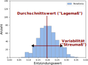
Lagemaße
- Der weithin bekannte Durchschnittswert oder Mittelwert ist ein Beispiel für ein Lagemaß von Verteilungen.
- Man spricht dabei auch von der zentralen Tendenz (engl. central tendency) einer Verteilung
- Das Lagemaß ist neben dem Streumaß der wesentliche Parameter, um die Verteilung von Daten effizient (d.h. mit wenigen Parametern) zu beschreiben
- Die drei wichtigsten Lagemaße sind:
- Mittelwert (gemeint ist das arithmetische Mittel)
- Median
- Modus (auch Modalwert)
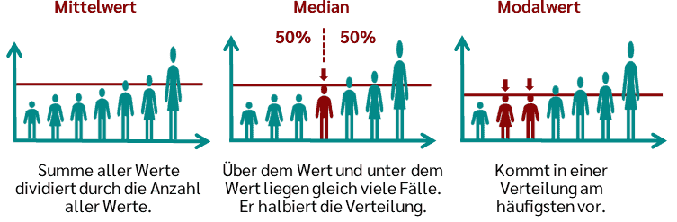
Mittelwert
- Berechnung (verbal):
- Addiere alle Werte
- Teile durch die Anzahl der Werte
- Berechnung (Formel):
\[ \bar{x} = \frac{1}{N}\sum_{i=1}^N x_i \]
- Notation: Strich über dem kleinen Letter der Zufallsvariable = Mittelwert der Zufallsvariable
Beispiel
Folgende Beobachtungen der Zufallsvariable \(X\) “Punktzahl in der Abi-Matheprüfung” werden in einer Stichprobe von 7 Psychologiestudierenden gemacht: \(\mathbf{x} = \{13, 7, 15, 8, 4, 9, 14\}\)
\[ \bar{x} = \frac{1}{7}(13+7+15+8+4+9+14) = = \frac{1}{7}\cdot 70 = 10 \]
Wann ist der Mittelwert sinnvoll?
- Der Mittelwert ist ein sinnvolles Lagemaß, wenn er nicht durch einzelne Ausreißer (extreme Werte) dominiert bzw. verzerrt wird.
| \(\mathbf{x}\) (z.B. Punktzahlen im Abi) | \(\bar{X}\) | Histogramm | Mittelwert sinnvoll? |
|---|---|---|---|
| \(\{13, 7, 15, 8, 4, 9, 14\}\) | \(10\) | 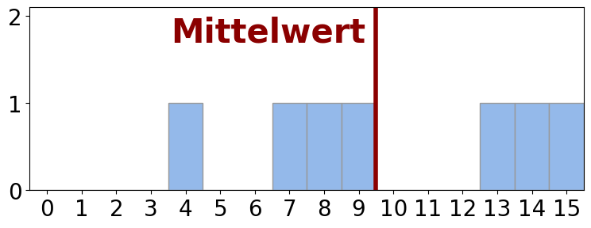 | ✓ |
| \(\{3, 1, 4, 2, 2, 6, 15\}\) | \(4.7\) | 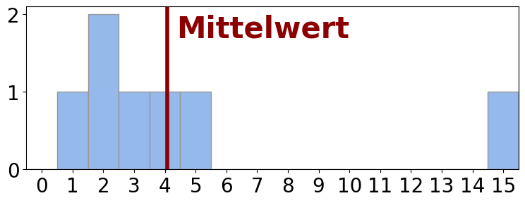 | ✗ |
| \(\{13, 15, 11, 12, 9, 14, 1\}\) | \(10.7\) | 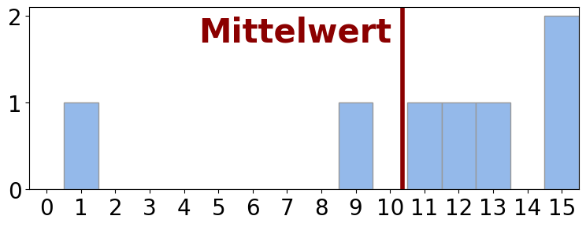 | ✗ |
Median
- Gibt es dominante Ausreißer in den Daten, so ist häufig der Median das sinnvollere Lagemaß
- Berechnung:
- Alle \(N\) Werte der Größe nach aufreihen
- Der Wert, der genau in der Mitte liegt, ist der Median
- Bei einer geraden Anzahl von Werten bilden zwei Werte die Mitte – in diesem Fall ist der Median der Mittelwert dieser beiden Werte
- \(\Big(\) Alternativ mit Formel: \(Tiefe_{\,\text{Median}}=\frac{N+1}{2}\Big)\)
Beispiel
Folgende Beobachtungen der Zufallsvariable \(X\) “Punktzahl in der Abi-Matheprüfung” werden in einer Stichprobe von 7 Psychologiestudierenden gemacht: \(\mathbf{x} = \{13, 7, 15, 8, 4, 9, 14\}\)
\[ \text{Sortierte Reihenfolge:} \;\mathbf{x} = \{4, 7, 8, \color{green}{\mathbf{9}}, 13, 14, 15\} \;\rightarrow\; \mathrm{Median} = \tilde{x} = 9 \]
Wir fügen den Wert eines weiteren Studierenden hinzu: \(\mathbf{x} = \{13, 7, 15, 8, 4, 9, 14, 10\}\)
\[ \text{Sortierte Reihenfolge:} \;\mathbf{x} = \{4, 7, 8, \color{green}{\mathbf{9}, \mathbf{10}}, 13, 14, 15\} \;\rightarrow\; \mathrm{Median} = \tilde{x} = \frac{9+10}{2} = 9.5 \]
Median
- Der Median ist außerdem sinnvoll bei:
- ordinalen Daten wie etwa diskreten Ratings (Skala von 1 bis 10), bei denen die Abstände zwischen Zahlen nicht interpretierbar sind.
- schiefen Verteilungen der Daten (dazu kommen wir noch)
- Der Median ist nicht sinnvoll, wenn:
- auch der Mittelwert ein sinnvolles Lagemaß darstellt (der Mittelwert hat einige hilfreiche mathematische Eigenschaften2).
- in der zugrundeliegenden Verteilung zwei oder mehr Wertebereiche deutlich häufiger vorkommen als andere Wertebereiche, und diese Bereiche nicht überlappen (z.B. hat der Median von \(\{2, 2, 2, 2, 9, 9, 9\}\) den wenig aussagekräftigen Wert 2).
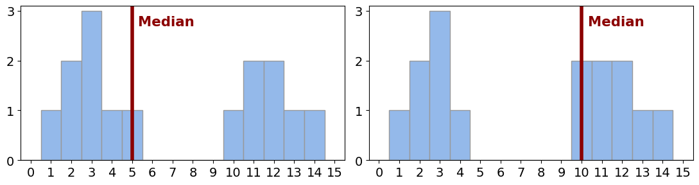
Modus
- In manchen Fällen ist es interessant zu wissen, was der häufigste Wert in einem Datensatz ist – dies ist der Modus.
- Berechnung:
- Zähle die Häufigkeit aller vorkommenden Werte
- Der häufigste Wert ist der Modus
- Im Fall von kategorialen Variablen ist der Modus das einzig mögliche Lagemaß (Beispiel: aus welchem Bundesland kommen die meisten von Ihnen?)
- Ein weiterer sinnvoller Anwendungsfall können schiefe Verteilungen sein:
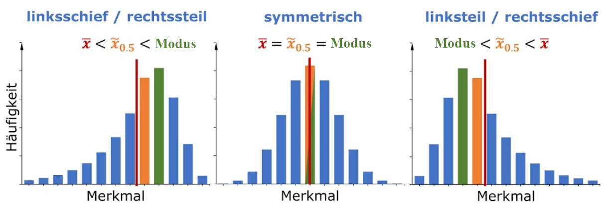
5 Streuungsmaße
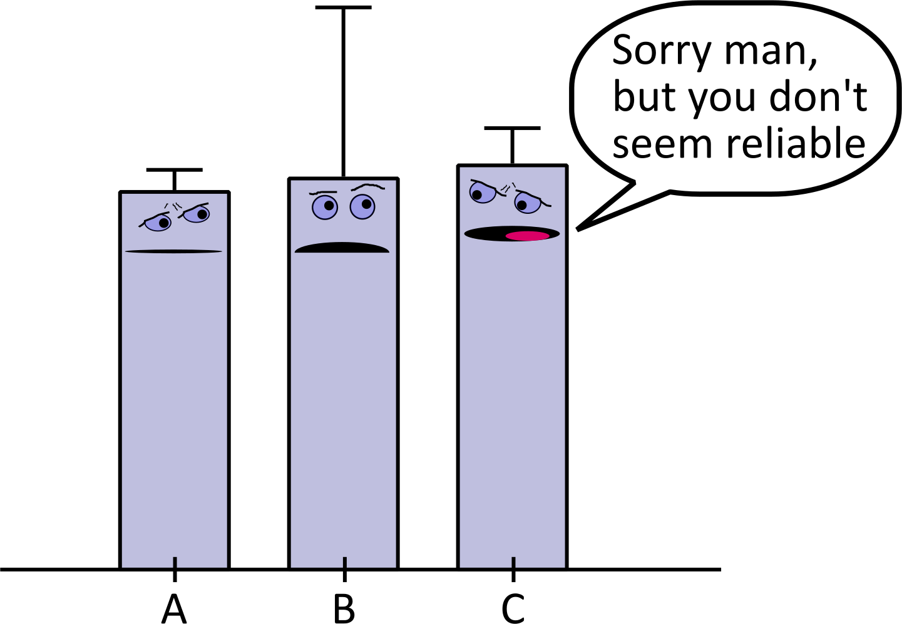
Warum sind Streuungsmaße wichtig?
“In unserer Studie waren brünette Menschen im Schnitt 10 IQ-Punkte schlauer als blonde Menschen”
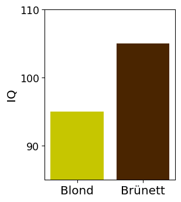
Behind the scenes:
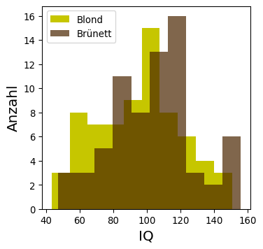
Warum sind Streuungsmaße wichtig?
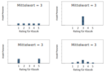
| Wie schätzen Sie die Streuung / Variabilität folgender Verteilungen ein? |
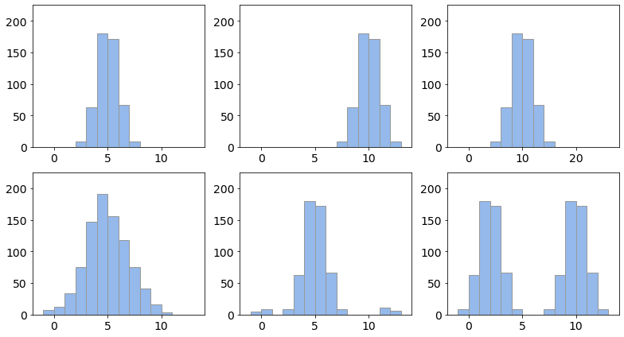
Streuungsmaße
- Streuungsmaße geben die Variabilität von Daten anann entweder
- Lagemaße sollten durch die Angabe eines Streuungsmaßes ergänzt werden
- Streuung von Daten kann ein Ausdruck von echter Variabilität in der Stichprobe sein oder eine Folge der Messungenauigkeit (häufig beides)
- Je nach Skalenniveau und Zweck können verschiedene Streuungsmaße bestimmt werden:
- Spannweite (Range)
- Interquartilsabstand
- Varianz
- Standardabweichung
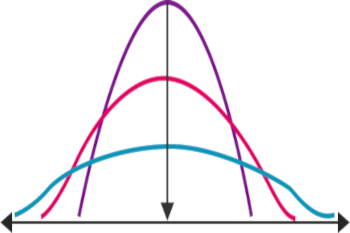
Spannweite / Range
- Die Spannweite oder Range ist die Differenz zwischen dem kleinsten und dem größten Wert:
\[ Range = x_{max} - x_{min} \]
- Einfachstes Streuungsmaß — sinnvoll, um dem Leser einen Eindruck der gesamten Spannbreite von Daten zu geben.
- Allerdings kaum Aussagekraft über die tatsächliche Variabilität der Daten
- Beispiel: die Spannbreite von \(\mathbf{x}=\{1, 10, 10, 10, 10, 10, 10, 10, 10, 10, 101\}\) ist \(101-1=100\), obwohl die Daten bis auf die zwei Ausreißer \(1\) und \(101\) keine Variabiltät aufweisen.
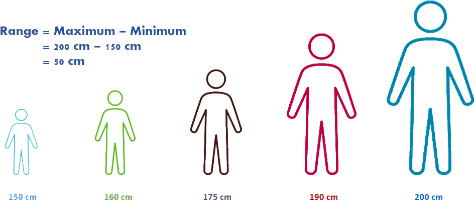
Range: Beispiele
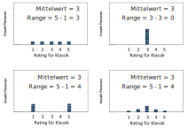
Varianz
- Die Varianz ist definiert als die Summe der quadrierten Abweichungen aller Werte vom Mittelwert:
\[ Var(X) = s^2 = \frac{1}{N}\sum_{i=1}^N\big(x_i-\bar{X}\big)^2 \]
(Die Varianz ist gleich der quadrierten Standardabweichung \(s\) – letztere lernen wir noch kennen)
- Durch die Quadrierung wird verhindert, dass sich positive und negative Abweichungen gegenseitig aufheben.
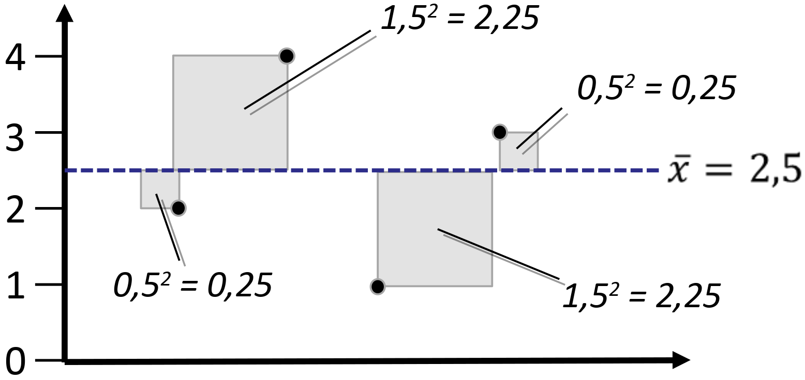
\[ \begin{aligned} s^2 &= 0{,}25+2{,}25+0{,}25+2{,}25 \\ &= 5 \end{aligned} \]
Warum werden werden nicht einfach die Absolutwerte der Differenzen genommen?

Prinzipiell wäre auch eine Formel für die Varianz mit Absolutabständen denkbar:
\[ Var_{\text{absolut}}(X) = \frac{1}{N}\sum_{i=1}^N\big|x_i-\bar{X}\big| \]
Über die Gründe, warum sich \(Var_{\text{absolut}}\) nicht durchgesetzt hat, streitet sich die Fachwelt. Neben historischen Gründen, gibt es aber einige Eigenschaften, die die Präferenz für Abstandsquadrate zumindest nachvollziehbar machen:
- Quadrierte Abstände gewichten Punkte, die weiter vom Mittelwert entfernt sind, höher. Dies entspricht einer “Bestrafung” von Ausreißern und kann ein wünschenswertes Verhalten sein.
- Analogie zur euklidischen Distanz (z.B. Satz des Pythagoras: \(a=\sqrt{b^2+c^2}\))
- Die Varianz mit Abstandsquadraten ist ein natürlicher Parameter der Normalverteilung
- Fortgeschritten: die Varianz mit Abstandsquadraten ist für alle \(x\) differenzierbar
(hingegen ist \(Var_{\text{absolut}}\) bei \(x=0\) nicht differenzierbar)
Weitergehende Literatur 5
Standardabweichung
- Ein Nachteil der Varianz ist, dass sie aufgrund der Abstandsquadrate in quadrierten Einheiten angegeben ist:
 |
\(x=\{167\,cm, 181\,cm, 154\,cm, 192\,cm, 173\,cm\}\rightarrow Var(X)=180.4\,\color{red}{cm^2}\) |
- Quadrierte Einheiten sind jedoch wenig intuitiv und schwer zu interpretieren.
- Aus diesem Grund wird häufig die Standardabweichung angegeben, welche die Wurzel der Varianz darstellt:
\[ s=\sqrt{Var(X)}=\sqrt{\frac{1}{N}\sum_{i=1}^N\big(x_i-\bar{X}\big)^2} \]
- Die Standardabweichung drückt die Streuung in den Rohwerten der Skala aus.
- Sie wird häufig auch mit \(SD\) (für standard deviation) abgekürzt.
Standardabweichung: Klassik-Beispiele
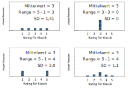
Interquartilsabstand (interquartile range = IQR)
- Quartile sind eine Spezialform von Quantilen
- Quantile teilen eine Verteilung von Daten in gleich große Abschnitte ein
- “gleich groß” = jeder Abschnitt hat gleich viele Datenpunkte
- Beispiel Dezile: Einteilung der Verteilung in 10 gleich große Abschnitte
- Hier: 20 Werte in 10 Abschnitte (Decile) á 2 Werte
\[ \underbrace{1, 1,}_{\small{\text{1.Dezil}}}\;\underbrace{1, 2,}_{\small{\text{2.Dezil}}}\;2, 3, \;3, 5, \;5, 5, \;\color{white}{\underbrace{\color{black}{5, 6,}}_{\small{\color{black}{\text{...}}}}} \;6, 7, \;7, 7, \;7, 8, \;\underbrace{8, 8}_{\small{\text{10.Dezil}}} \]
- Beispiel Quintile: Einteilung der Verteilung in 5 gleich große Abschnitte
- Hier: 30 Werte in 5 Abschnitte (Quintile) á 6 Werte
\[ \underbrace{1, 1, 1, 1, 2, 2,}_{\small{\text{1.Quintil}}}\;\underbrace{2, 2, 2, 3, 3, 3,}_{\small{\text{2.Quintil}}}\;\underbrace{4, 4, 5, 5, 5, 5,}_{\small{\text{3.Quintil}}} \;\underbrace{5, 6, 6, 7, 7, 7,}_{\small{\text{4.Quintil}}} \;\underbrace{8, 8, 9, 9, 9, 9}_{\small{\text{5.Quintil}}} \]
- Beispiel Quartile: Einteilung der Verteilung in 4 gleich große Abschnitte
- Hier: 12 Werte in 4 Abschnitte (Quartile) á 3 Werte
\[ \underbrace{1, 1, 2,}_{\small{\text{1.Quartil}}}\;\underbrace{2, 2, 2,}_{\small{\text{2.Quartil}}}\;\underbrace{3, 4, 5,}_{\small{\text{3.Quartil}}} \;\underbrace{5, 6, 6}_{\small{\text{4.Quartil}}} \]
Interquartilsabstand (interquartile range = IQR)
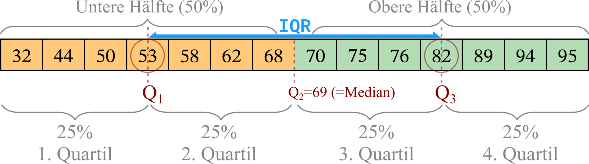
- Um eine Reihe von Daten in 4 gleich große Quartile zu teilen, sind genau drei Quartilsgrenzen notwendig
- Diese Quartilsgrenzen werden mit \(Q_1\), \(Q_2\), \(Q_3\) (bezogen auf Quartile) bzw. mit \(Q_{25\%}\), \(Q_{50\%}\), \(Q_{75\%}\) (bezogen auf Quantile) bezeichnet
- Der Interquartilsabstand (IQR) ist die Differenz aus der 75%-Quantilsgrenze und der 25%-Quantilsgrenze bzw. die Differenz aus der 3. und der 1. Quartilsgrenze:
\[ IQR = Q_{75\%} - Q_{25\%} = Q_3 - Q_1 \]
Interquartilsabstand (interquartile range = IQR)
- Berechnung des IQR:
- Sortiere alle Werte von klein nach groß
- Bestimme die Tiefe des Medians (runde ab bei unganzzahligem Wert):\(\,Tiefe_{\text{Median(abgerundet)}}\)
- Bestimme die Tiefe des Quartils: \(Tiefe_{\text{Quartil}}=\frac{Tiefe_{\text{Median(abgerundet)}}+1}{2}=\frac{\text{abgerundet}\big(\frac{N+1}{2}\big)+1}{2}\)
- Für das 25%-Quantil (\(Q_1\)) geht man von vorne in die Datenreihe
- Für das 75%-Quantil (\(Q_3\)) geht man von hinten in die Datenreihe
|
Folgende 11 Werte werden beobachtet: \(x=\{1, 1, \color{darkred}{2}, \color{darkred}{3}, 3, \color{green}{3}, 4, \color{darkblue}{6}, \color{darkblue}{6}, 7, 9\}\) In diesem Fall ist der 6. Wert der Median, also \(\,\color{green}{Tiefe_{\text{Median(abgerundet)}}=6}\) Die Tiefe des Quartils ist damit \(Tiefe_{\text{Quartil}}=\frac{\color{darkgreen}{Tiefe_{\text{Median(abgerundet)}}}+1}{2}=\frac{6+1}{3}=3{,}5\) Der “\(3{,}5\)”-te Wert von vorne ist der Mittelwert aus \(\color{darkred}{2}\) und \(\color{darkred}{3}\) (\(\color{darkred}{Q_1=2{,}5}\)), der “\(3{,}5\)”-te Wert von hinten ist der Mittelwert aus \(\color{darkblue}{6}\) und \(\color{darkblue}{6}\) (\(\color{darkblue}{Q_3=6}\)) \(IQR = \color{darkblue}{Q_3} - \color{darkred}{Q_1} = \color{darkblue}{6} - \color{darkred}{2.5} = 3{,}5\) |
Wann ist der Interquartilsabstand ein sinnvolles Streuungsmaß?
Outliers: When your dataset contains outliers, extreme values can heavily influence other dispersion measures like the range or standard deviation. The IQR is robust to outliers since it only depends on the middle 50% of the data.
Skewed Data: If the data is not normally distributed and has a skewed shape, using the IQR can be advantageous because it is less affected by the tail of the distribution compared to other measures like the standard deviation.
Der Interquartilsabstand ist zur Varianz, wie der Median zum Mittelwert
Interquartilsabstand: Klassik-Beispiele
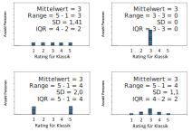
Die Streuungsmaße im Vergleich
| Spannbreite (Range) | ▪ Gibt die Ausdehnung des gesamten Wertebereiches an ▪ Auf kein bestimmtes Lagemaß bezogen ▪ Geringer statistischer Nutzen, manchmal interessante Zusatzinfo ▪ Maximal abhängig von Ausreißern |
| Varianz | ▪ Auf den Mittelwert bezogen (“wie stark streuen die Daten um den Mittelwert?”) ▪ Relativ anfällig gegenüber Ausreißern ▪ Unnatürliche quadrierte Einheiten |
| Standardabweichung | ▪ Wie Varianz, aber natürliche unquadrierte Einheiten |
| Interquartilsabstand | ▪ Auf kein bestimmtes Lagemaß bezogen ▪ Jedoch häufig im Zusammenhang mit Median angegeben ▪ Sehr robust gegenüber Ausreißern |
6 Darstellung von Lage- und Streuungsmaßen in Text und Bild
Angabe von Lage- und Streuungsmaßen in wissenschaftlichen Arbeiten
- Handelt es sich um einzelne Werte, können diese übersichtlich im Fließtext berichtet werden:
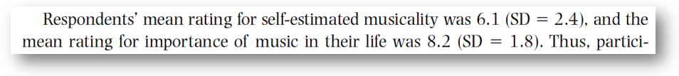
- Handelt es sich um eine größere Anzahl von Werten (z.B. bei mehreren Bedingungen) bietet sich eine Darstellung in Tabellenform an.
- Auch bei dieser Darstellung sollten Lage- und Streuungsmaße angegeben werden.
- In wissenschaftlichen Manuskripten werden Tabellen häufig nach den APA-Richtlinien (7. Edition, 2020) formatiert:
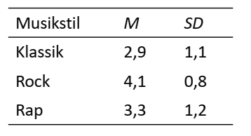
Siehe Link6 für Informationen zur Formatierung von Tabellen im APA-Stil
Beispieltabelle
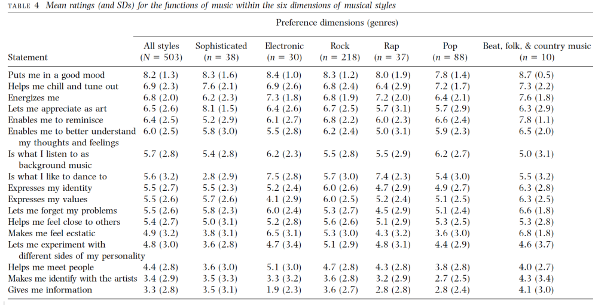
Balkendiagramm mit Fehlerbalken
- Der Fehlerbalken ist die klassische graphische Repräsentation der Streuung:
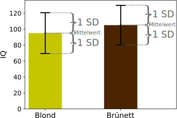
- Die Darstellung entspricht dabei dem Lagemaß (im Bild der Mittelwert) plus/minus dem Streuungsmaß (im Bild die Standardabweichung)
- Der gesamte Fehlerbalken hat also die Ausdehnung \(2\cdot\text{Streuungsmaß}\)
- Klassische Kombinationen von Lagemaß und Streuungsmaß sind:
- \(\text{Mittelwert}\pm\text{Standardabweichung}\)
- \(\text{Mittelwert}\pm\text{Standardfehler}\) (dazu kommen wir noch)
- \(\text{Mittelwert}\pm\text{Konfidenzintervall}\) (dazu kommen wir noch)
- \(\text{Median}\pm\text{IQR}\)
- \(\text{Median}\pm\text{Median-Abweichung}\) (das behandeln wir nicht)
Beispiel
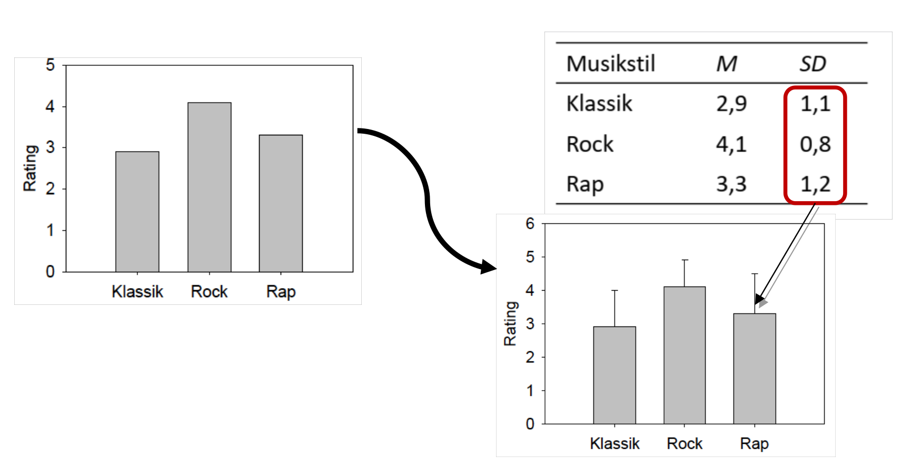
Einzelner Punkt statt Balken
- Statt eines Balkens kann der Mittelwert auch durch einen einzelnen Punkt repräsentiert werden – manche empfinden das als eleganter:
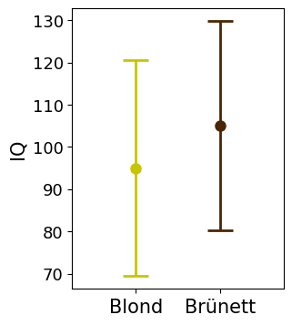
The case against bar plots
- Trotz ihrer hohen Verbreitung haben Balkendiagramme (Barplots) eine Reihe von Nachteilen:
- Sie geben kaum Information über die spezifische Verteilung der Daten und mögliche Ausreißer
- Die intransparente Darstellungsweise verdeckt häufig, dass 1) Daten unrealistisch sind oder 2) Ausreißer das Lagemaß verzerren oder 3) die Verteilung der Daten unpassend für das verwendete Lagemaß sind.
- Sie legen den Fokus auf irrelevante Bereiche der Skala (siehe Abbildung unten)
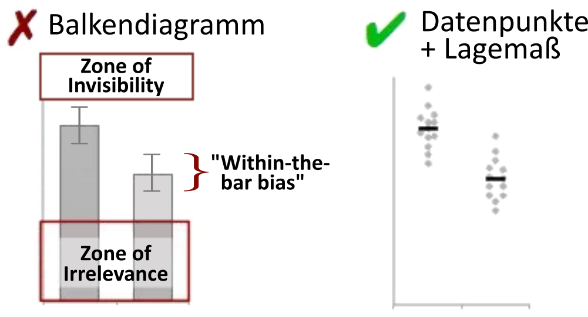
Durch die tatsächliche Verteilung der Datenpunkte im rechten Plot wird klar, dass im Balkendiagramm ein vergleichsweise starker Fokus auf Bereiche gelegt wird, in den gar keine Daten enthalten sind (“Zone of Irrelevance”), und andererseits Extremwerte, insbesondere oberhalb des Fehlerbalkens, visuell völlig unrepräsentiert sind (“Zone of Invisibility”). Der Fehlerbalken ist außerdem leicht mit der Illusion verbunden, dass sich alle Datenpunkte innerhalb des angezeigten Bereiches befinden (“Within-the-bar bias”).7.
The case against bar plots
- Alle Datenverteilungen haben den gleichen Mittelwert und Standardabweichung
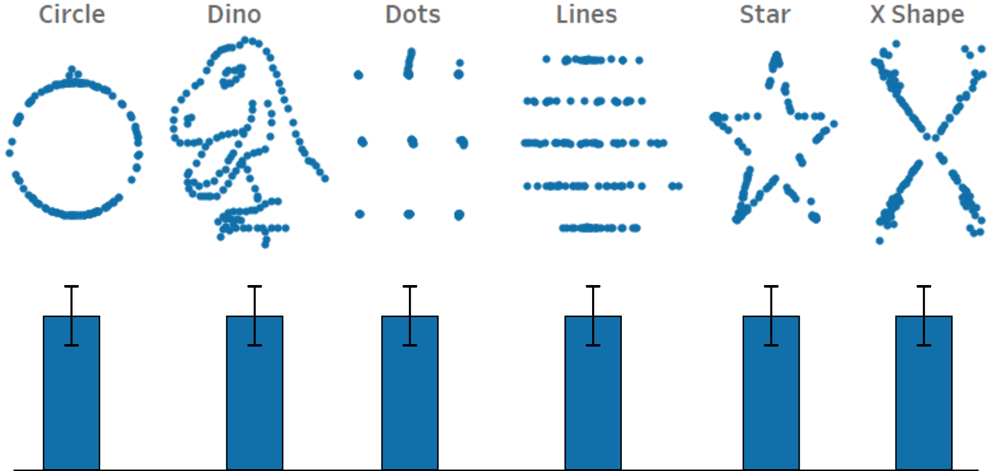
The case against bar plots

Der Box-Plot
- Eine bekannte Darstellungsform für den Median ist der Boxplot
- In einer der bekanntesten Variationen zeigt der Boxplot drei Informationen an:
- Median (als einfache Linie)
- Box: die “mittleren 50% der Daten” (25% über dem Median, 25% unter dem Median)
- Antennen (“Whisker”): der Bereich der Daten, der keine Ausreißer enthält. Häufig ist hier das Kriterium, dass die Daten im Bereich \([Q_1-1.5\cdot IQR; Q_3+1.5\cdot IQR]\) liegen müssen.
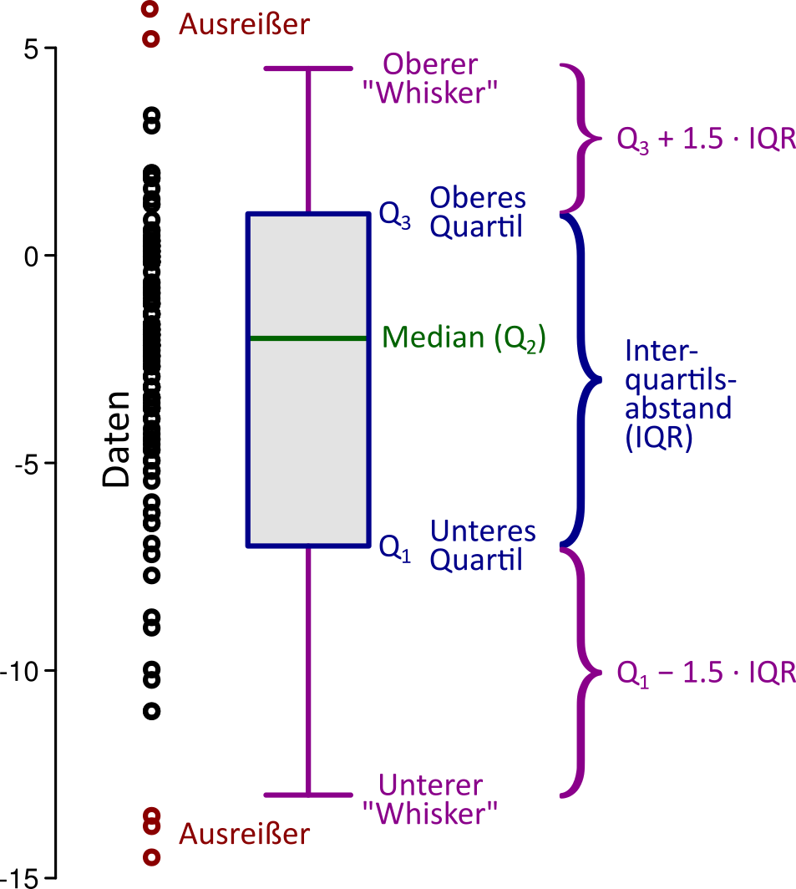
- Der Boxplot gibt eine schnelle Übersicht über wesentliche Kennwerte eines Datensatzen
- Zu beachten ist, dass zahlreiche Variationen des Boxplots existieren
- Bei einer weiteren bekannten Variation zeigen die Antennen das absolute Maximum und Minimum der Daten an (also inklusive möglicher Ausreißer)
Moderne Darstellungsformen
- Moderne Statistik- und Plotsoftware ermöglicht heutzutage eine verbesserte und transparentere Darstellung von Daten:
- Anzeige einzelner Datenpunkte, meist getrennt durch “Jitter” (d.h. leichte horizontale oder vertikale Versetzung mit zufälligen Abständen, um Überschneidung der Datenpunkte zu reduzieren)
- Anzeige der Verteilung mittels (interpolierter) Histogramme (wichtige Information für die
Auswahl geeigneter Lage- und Streumaße, aber auch statistischer Tests) - Zusätzliche Anzeige von Kennwerten
7 Problematische Abbildungen
Abschneiden der y-Achse
- Das Abschneiden der y-Achse verzerrt häufig die Stärke von Effekten
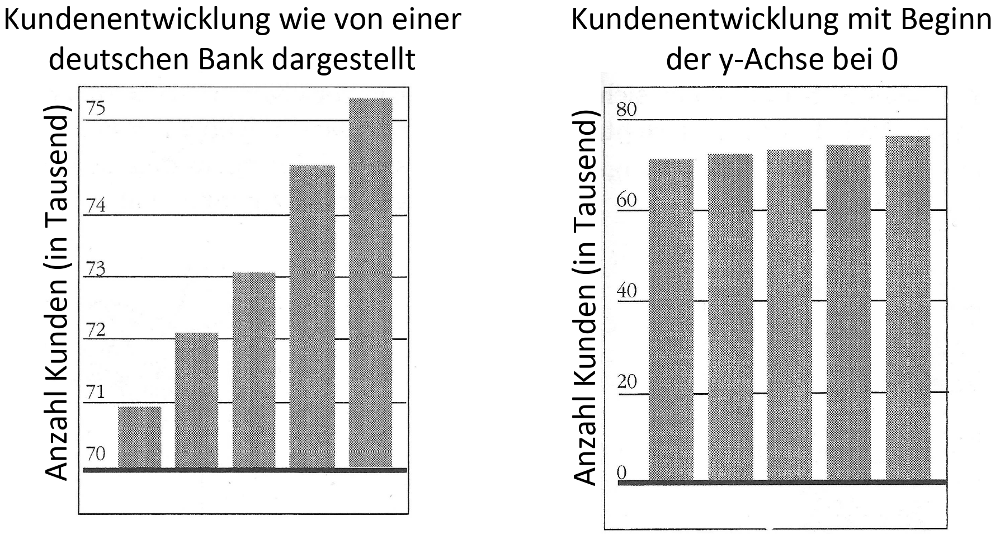
- Die grundsätzliche Empfehlung ist daher, die y-Achse bei 0 beginnen zu lassen
- Es gibt aber Ausnahmen:
- Vorliegen eines anderen natürlichen Referenzwertes (z.B. IQ-Wert 100, wenn alle Werte über 100 liegen).
- Wären tatsächlich vorhandene Unterschiede zwischen Balken verschiedener Bedingungen überhaupt nicht mehr wahrnehmbar, kann ein Abschneiden der y-Achse sinnvoll sein (oder eine Logarithmus-Skala!).
- In manchen Fällen können Messwerte niemals unter einen Mindestwert fallen. Beispielsweise sind motorische Reaktionszeiten physiologisch bedingt fast immer über 100ms – in diesem Fall ist der Bereich
0-100ms “Totraum” und kann sinnvollerweise weggelassen werden. - Im Idealfall wird das Abschneiden der y-Achse durch einen “Bruch” angezeigt (siehe nächste Folie).
Beispiel für gebrochene y-Achse
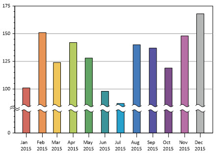
Gleiche Intervalle auf x-Achse
- Ungleichmäßige Intervalle auf der x-Achse verzerren die Daten von Liniendiagrammen
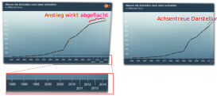